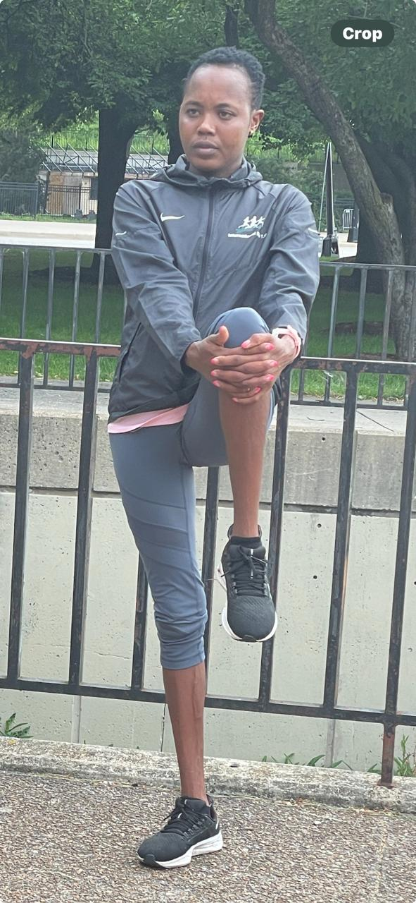

Joyline CHEMUTAI
Profile
Home: Kericho, Kenya
International Elite T. C.
(+(310)849-6639)
internationalelitetc@gmail.com
Coach: Kiplangat Ngeno
Personal Bests
10K: 31:57 (2022)
21K: 1:09:44 (2020)
Race Results Highlights
| Year | Competition | Country | Results | Event Date | Position |
|---|---|---|---|---|---|
| 2024 | Garry Bjorklund Half Marathon, Two Harbors to Duluth, Duluth, MN | USA | 1:10:50 | 22 JUN 2024 | 3rd |
| 2024 | Bank of America Chicago 13.1, Chicago, IL | USA | 1:11:45 | 09 JUN 2024 | Champion |
| 2024 | San Blas Half Marathon; Coamo | USA | 1:11:45 | 09 JUN 2024 | Champion |
| 2022 | Monterey Bay Half Marathon, Monterey, CA | USA | 1:10:58 | 13 NOV 2022 | Champion |
| 2022 | Kenyan Championships, Moi International Sports Centre, Kasarani, Nairobi | KENYA | 10:20.20 | 28 APR 2022 | 10th |
| 2022 | KDF Ch., Ulinzi Sports Complex, Langata, Nairobi | KENYA | 9:56.06 | 22 APR 2022 | 2nd |
| 2022 | adizero Road to Records, Herzogenaurach | GER | 1:10:52 | 30 APR 2022 | 8th |
| 2020 | NN CPC Loop Den Haag, Den Haag | NED | 1:09:44 | 08 MAR 2020 | Champion |
| 2019 | Internationale Wachau Half Marathon, Krems | AUT | 1:11:20 | 29 SEP 2019 | 3rd |
| 2019 | Half Marathon, Klagenfurt | AUT | 1:12:05 | 25 AUG 2019 | Champion |
| 2018 | Nairobi Kenya Defence Forces Ch., Nairobi | KEN | 9:43.1h | 06 JUN 2018 | 5th |
International Elite T.C
commit to train, train to compete, compete to win
David Kiprotich BETT

Profile
Residence: Keringet, Kenya
Date of Birth: October 18, 1992 (31YRS)
Contact: International Elite T. C.
Keith Olson (310)849-6639
Coach: Willy Langat
Accomplishments
- Represented Kenya at 2018 Commonwealth Games
- Ranked #1 in the world, 2010, 5,000m, U20
- Ranked #2 in the world, 2009, 5,000m, U18
Personal Bests
3,000M: Result 7:37.51 (22 AUG 2010)
5,000m: Result 13:06.06 (19 AUG 201019 AUG 2010)
10,000m: Result 28:07.4 (11 JUL 2015)
5Km: Result 13:39 (16 APR 2022)
10Km:Result 28:08 (23 JUN 2019)
10mile:Result 47:17 (10 OCT 2021)
Half Marathon: Result 1:02:13 (13 NOV 2022)
Race Results Highlights
| Year | Competition | Country | Results | Event Date | Position |
|---|---|---|---|---|---|
| 2022 | Monterey Bay Half Marathon | USA | 1:02:13 | 2022 | Champion |
| 2022 | Flanigan’s Rib Run, Miami | USA | 28:25 | 2022 | Champion |
| 2022 | Cooper River Bridge 10K, Charleston | USA | 28:17 | 2022 | Champion |
| 2022 | Falmouth Road Race, Massachusetts | USA | 32:39 | 2022 | 3rd |
| 2022 | B.A.A. 5K, Boston | USA | 13:42 | 2022 | 6th |
| 2022 | Ice Breaker 5M, Montana | USA | 23:08 | 2022 | Champion |
| 2022 | Bloomsday 12K, Spokane | USA | 35:33 | 2022 | 4th |
| 2022 | Peachtree 10K, Atlanta | USA | 28:59 | 2022 | 12th |
| 2022 | Mini-Indy Half Marathon, Indianapolis | USA | 1:03:32 | 2022 | 2nd |
| 2022 | Matanzas 5000, Florida | USA | 13:59 | 2022 | Champion |
| 2021 | Broad Street 10M, Philadelphia | USA | 47:17 | 2021 | 7th |
| 2021 | Fresh 15K, Texas | USA | 44:42 | 2021 | 2nd |
| 2021 | Gum Tree 10K, Mississippi | USA | 29:01 | 2021 | Champion |
| 2020 | All-American City 10K, Texas | USA | 28:46 | 2020 | Champion |
| 2019 | Carlsbad 5000, California | USA | 13:54 | 2019 | 2nd |
| 2019 | B.A.A. 5K, Boston | USA | 14:04 | 2019 | 9th |
| 2019 | B.A.A. 10K, Boston | USA | 28:08 | 2019 | Champion |
| 2019 | Applied Materials 5K, California | USA | 13:57 | 2019 | 2nd |
| 2019 | B.A.A. Half marathon, Boston | USA | 1:02:31 | 2019 | 3rd |
International Elite T.C
commit to train, train to compete, compete to win
Dennis KIPKOSGEI

Profile
Home: Nakuru, Kenya
Date of birth: December 20, 1994
Current World Athletics Ranking: 197
Contact: International Elite T. C.
Keith Olson: (310) 849-6639
internationalelite@gmail.com
Personal Bests
10km: 28:39 (2022)
15km: 46:40 (2018)
10mi: 46:13 (2021)
21km: 1:03:23 (2022)
Race Results Highlights
| Year | Competition | Country | Results | Event Date | Position |
|---|---|---|---|---|---|
| 2022 | RnR San Jose Half Marathon | USA | 1:03:33 | 4th | |
| 2022 | Cooper River Bridge Run 10K | USA | 28:43 | 5th place | |
| 2022 | Broad Street 10 Mile | USA | 46:41 | 4th place | |
| 2022 | Brooklyn Half Marathon | USA | 1:04:00 | 2nd place | |
| 2022 | RnR Atlantic City Half Marathon | USA | 1:04:21 | Champion | |
| 2021 | Broad Street 10 Mile | USA | 46:13 | Champion | |
| 2021 | Norcross Run 10K | USA | 29:26 | Champion | |
| 2021 | Rib Run 10K | USA | 29:05 | 4th place | |
| 2019 | Mini-Indy Half Marathon | USA | 1:05:44 | 2nd place | |
| 2019 | B.A.A. Half Marathon | USA | 1:05:20 | 16th place | |
| 2018 | Tulsa Run 15K | USA | 46:40 | 2nd place | |
| 2018 | Youngstown Peace Race 10K | USA | 28:52 | Champion | |
| 2018 | Virginia 10 Mile | USA | 49:44 | 6th place | |
| 2018 | Crim 10 Mile | USA | 48:55 | 5th place |
International Elite T.C
Commit to train, train to compete, compete to win
Dominic KORIR
Profile
Residence: Kericho, Kenya
Date of birth: May 12, 1993
Coach: Willy Lagat
Contact: International Elite T. C.
Keith Olson (310)849-6639
Personal Bests
10km: 28:08 (2019)
12km: 35:09 (2019)
15km: 43:17 (2020)
10mi: 46:45 (2017)
21km: 1:01:45 (2020)
Race Results Highlights
| Year | Competition | Results | Position |
|---|---|---|---|
| 2022 | Monterey Bay Half Marathon | 1:03:05 | 4th |
| 2022 | RnR Half Marathon San Jose | 1:03:02 | 3rd |
| 2022 | RnR Half Marathon San Antonio | 1:04:34 | Champion |
| 2022 | Ice Breaker 5M | 23:38 | 2nd |
| 2022 | Bolder Boulder 10K | 30:44 | 8th |
| 2022 | Peachtree 10K | 29:58 | 17th |
| 2022 | Cooper River Bridge 10K | 28:51 | 8th |
| 2022 | Lincoln Half Marathon | 1:03:53 | Champion |
| 2022 | Mini-Indy Half Marathon | 1:04:11 | 3rd |
| 2021 | Philadelphia Distance Run | 1:02:48 | 2nd |
| 2021 | Cherry Blossom 10miler | 47:30 | 6th |
| 2021 | Cooper River Bridge 10K | 29:11 | 7th |
| 2021 | Cotton Row 10K | 29:23 | Champion |
| 2021 | Lincoln Half Marathon | 1:03:45 | Course record and champion |
| 2021 | Gum Tree 10K | 29:13 | 2nd |
| 2021 | Fresh 15K | 45:05 | 3rd |
| 2020 | Houston Half Marathon | 1:01:45 | 17th |
| 2020 | Miami Half Marathon | 1:03:52 | Champion |
| 2020 | Mercedes Half Marathon | 1:02:54 | 2nd |
| 2020 | Fresh 15K | 44:05 | 2nd |
| 2019 | Azalea Trail Run 10K | 28:34 | Champion |
| 2019 | Cooper River Bridge 10K | 28:08 | 3rd |
| 2019 | Crescent City Classic 10K | 28:28 | 3rd |
| 2019 | UAE Kidney 10K | 28:14 | 4th |
| 2019 | Cleveland Rite Aid 10K | 29:17 | Champion |
| 2019 | Lilac Bloomsday 12K | 35:09 | 5th |
| 2019 | Cotton Row 10K | 29:36 | Champion |
| 2019 | B.A.A. 10K | 28:48 | 6th |
| 2019 | HAP Crim 10miler | 47:04 | 3rd |
| 2019 | Virginia 10miler | 47:43 | 3rd |
| 2019 | B.A.A. Half Marathon | 1:02:44 | 4th |
| 2019 | Columbus Half Marathon | 1:02:17 | 2nd |
| 2018 | Cleveland Rite Aid 10K | 29:26 | 3rd |
| 2018 | Pittsburgh 10miler | 47:12 | 3rd |
| 2018 | San Diego Half Marathon | 1:02:59 | 2nd |
International Elite T.C
Commit to train, train to compete, compete to win
Vincent Kiprono
Profile
Residence: Eldoret, Kenya
Date of birth: May 1, 2004
Coach: Kiplangat Ngeno
Contact: International Elite T. C.
Keith Olson (+310)849-6639
Personal Bests
Half marathon: 64:23 (2023)
10km: 29:55 (2022)
10km: 29:55
5km: 14:05
Race Results Highlights
| Year | Competition | Results |
|---|---|---|
| 2023 | Road race kilimanjaro, half marathon | 64:23 |
| 2022 | Road race,Standard charter | 29:55 |
| Track field in thika race,10km | 29:55 |
International Elite T.C
Commit to train, train to compete, compete to win
Betty Chepkemoi SIGEI
Profile
Residence: Keringet, Kenya
Date of birth: sep 30, 1998
Coach: Kiplangat Ngeno
Contact: International Elite T. C.
Keith Olson (+310)849-6639
Personal Bests
Half marathon: 1:14.49 (2024)
5000m: 15:37.8 (2021)
1500m: 4:29.0 (2019)
800m: 2:03.61 (2016)
Race Results Highlights
| Date | Competition | Results | Position | Discipline |
|---|---|---|---|---|
| Half Marathon Chicago, IL USA | 1:14:49 | Half Marathon | ||
| 16 APR 2022 | Police Ch., Nairobi | 15:59.00 | 4th | 5000m |
| 12 MAR 2021 | 2nd AK Weekend Meeting, Moi International Sports Centre, Kasarani, Nairobi | 15:37.8h | 4th | 5000m |
| 17 FEB 2018 | Nairobi Kenya Commonwealth Games Trials, Nairobi | 2:06.28 | 5th | 800m |
| 21 JUL 2016 | Bydgoszcz IAAF World U20 Championships, Zdzisław Krzyszkowiak Stadium, Bydgoszcz | 2:06.27 | 7th | 800m |
| 22 JUN 2016 | Nairobi Kenya World Junior Trials, Nairobi | 2:04.8h | 1st | 800m |
| 28 MAY 2016 | Kenyan Championships, Nairobi | 2:03.61 | 6th | 800m |
| 20 JUL 2016 | Bydgoszcz IAAF World U20 Championships, Zdzisław Krzyszkowiak Stadium, Bydgoszcz | 2:05.46 | 3rd | 800m |
| 01 APR 2015 | Nairobi Africa Youth Ch. Trials, Nairobi | 2:06.0h | 1st | 800m |
| 17 JUN 2015 | Nairobi Kenyan Youth Trials, Nairobi | 2:06.8h | 1st | 800m |
International Elite T.C
Commit to train, train to compete, compete to win
Mercy Lagat
Profile
Residence: Keringet, Kenya
Date of birth: augast 6, 1993
Coach: Kiplangat Ngeno
Contact: International Elite T. C.
Keith Olson (+310)849-6639
Personal Bests
Half Marathon: 1:18:05 (2024)
Marathon: 2:46:18 (2023)
Race Results Highlights
| Competition | Result | Wind | Discipline | Date | Place |
|---|---|---|---|---|---|
| Bank of America Chicago 13.1, Chicago, IL | 1:18:05 | Half Marathon | 09 JUN 2024 | 7 | |
| Kilimanjaro Half Marathon, Moshi | 1:19:44 | Half Marathon | 25 FEB 2024 | 15 | |
| Standard Chartered Singapore Marathon, Singapore | 2:46:18 | Marathon | 03 DEC 2023 | 9 |
International Elite T.C
Commit to train, train to compete, compete to win
Phillip Methu MBURU

Profile
Residence: Nyahururu, Kenya
Date of Birth: June 12, 1994 (30YRS)
Contact: ESMI Elite AC
Phone (USA): 310-849-6639
Phone (Kenya): 011-254-708-481-707
Email: philmet94@yahoo.com
Coach: Francis Kamau
Accomplishments
- International competitor specializing in the 10km and half marathon distances
- Team member for Kenya Prison Service cross-country
Personal Bests
15km: 45:03 (2019)
21km: 1:03:43 (2019)
10,000m: 28:46 (2019)
10km: 29:04 (2018)
5,000m: 14:07 (2016)
Race Results Highlights
| Year | Competition | Country | Results | Event Date | Position |
|---|---|---|---|---|---|
| 2021 | Regional Prisons Championship XC | Kenya | 2nd place | 2021 | 2nd |
| 2020 | Prisons Championship XC, Ruiru | Kenya | 5th place | 2020 | 5th |
| 2019 | Lincang 12km Road Race | China | Champion | 2019 | 1st |
| 2019 | Lake Wanfo International 10km | China | 3rd place | 2019 | 3rd |
| 2019 | Jiamusi International Half Marathon | China | Champion | 2019 | 1st |
| 2019 | Zhanqi Half Marathon | China | 3rd place | 2019 | 3rd |
| 2018 | Lugang 10K Road Race | China | Champion | 2018 | 1st |
| 2018 | Haikuo Half Marathon | China | 5th place | 2018 | 5th |
| 2018 | Olympic Sports National Road Race | China | 4th place | 2018 | 4th |
| 2018 | Tongan International Half Marathon | China | 6th place | 2018 | 6th |
| 2017 | Guizhou Tour Half Marathon | China | Champion | 2017 | 1st |
| 2017 | Qiangan Hongjiang 10km | China | 2nd place | 2017 | 2nd |
| 2017 | Hengdian Half Marathon | China | 5th place | 2017 | 5th |
| 2017 | Taishan Half Marathon | China | 5th place | 2017 | 5th |
ESMI Elite AC
Commit to train, train to compete, compete to win